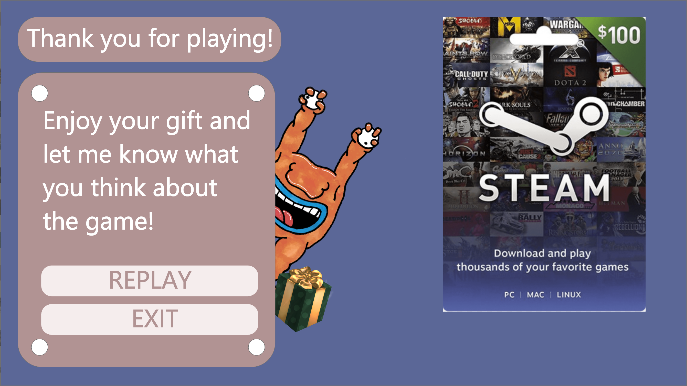

The first step was to carry out the research of two people. Me and my partner had a person each which we interviewed, observed and analysed. After doing the reasech each of us gathered the data and put it together into a user persona.


After creating user portraits of people we analyzed me and my design partner combined those portraits into a persona. We used this persona as a starting point for our design challenge.
After bainstorming and a week of developing the idea we settled on creating a card personalization tool that would allow users to create 3D monster shaped gift cards-pinjatas with a message inside that directs the receiver of the card to an online unwrapping experience that is a game in which the user has to kill the same paper monster that has been resurrected in the digital world.
My part was to create digital unwrapping experience, so I decided to make a decision based game that is entertaining and fun. First of all I made a paper prototype of the game.


After testing my paper prototype and correcting the story of the game I moved on drawing the game on paper. It took very long time but it was definitely worth it. After drawing it out I scanned it and started working on it on Adobe XD.


Using Adobe XD I created hi-fi prototype of the "Monster hunter" game and that was the final product of this project.
